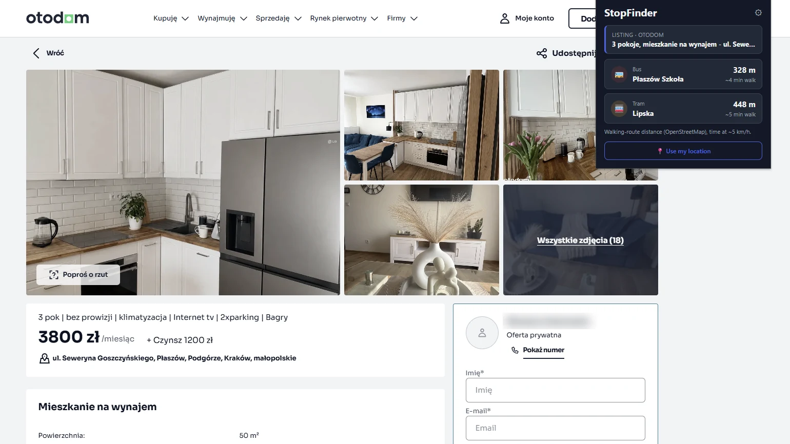

StopFinder
A Chrome extension for flat hunting in Kraków. Open a listing on Otodom or OLX and it shows how far you have to walk to the nearest bus and tram stop, measured along real streets with open map and timetable data instead of paid map APIs.
- Java
- Spring Boot
- PostGIS
- OSRM